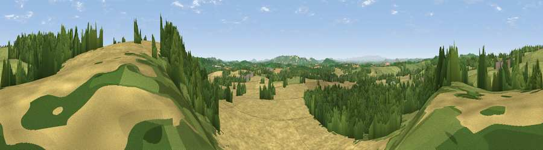

Viewpoint near Stoke Lacy
#14683 in England · top 37% of its area beats it · near Stoke Lacy · access?Where it is
The exact computed spot (SO 63825 49175). Click the marker for map links.
Public access: no public right of way or access land is recorded at this exact spot — it may be on private land. Computed from Natural England's CRoW access layer and OpenStreetMap rights of way — not the legal definitive map. Always verify locally.
The view, rendered

A 360° render of this exact spot computed from the terrain model, tree cover and land cover — summer colours, afternoon light, calibrated against photographs of famous viewpoints. Real trees, hedges and buildings will differ in detail.
The panorama
Grey silhouette: terrain skyline in each direction (720 bearings, Earth curvature and refraction included). Dashed green: skyline with trees (+15 m) and buildings (+8 m) as obstacles. Blue strip: how far the ground is visible on each bearing.
Where the view opens
Wedge length = distance to the farthest visible ground on that bearing (vegetation-aware). Rings at 10, 25 and 50 km.
What fills the view
44% cropland · 31% woodland · 24% grassland ·
Angular shares of the visible panorama (visual magnitude), not map area. Landscape diversity 0.48 (0–1 Shannon).
Key numbers
More beautiful places nearby
The staircase of upgrades: each row has a higher view potential than everything closer. Driving times are estimates from straight-line distance, calibrated against real road routing — check an actual route before setting out.
| Place | Direction | Drive | Score |
|---|---|---|---|
| Viewpoint near Bishop's Frome | NE · 1 km | ~3 min | 62.3 |
| Viewpoint near Bishop's Frome | NNE · 1 km | ~4 min | 64.4 |
| Munderfield Stocks | NNE · 2 km | ~5 min | 64.8 |
| Viewpoint near Bishop's Frome | E · 4 km | ~9 min | 69.0 |
| Viewpoint near Little Cowarne | WNW · 5 km | ~11 min | 69.6 |
| Viewpoint near Bromyard | NNE · 7 km | ~14 min | 72.6 |
| Viewpoint near Pencombe | NW · 8 km | ~15 min | 72.8 |
| Seagar Hill | SSW · 11 km | ~20 min | 82.1 |
52.13968, -2.52999 · source: screening · position refined by local search. Computed location — check access rights before visiting.